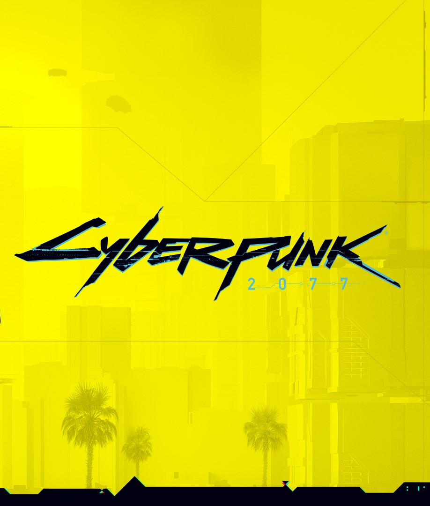

The game you've been
waiting for so long
The game you've been
waiting for so long
will be available at:
will be available at:
Days
Hours
Minutes
Seconds
large open world
Players will be able to be a witness or part of combat situations and other random events that take place throughout Night City.
Instead of large open spaces, players will find a city full of details with many tall buildings in which to explore each floor and living quarters.
a lot of gangs
You’ll discover a lot of violence in Night City’s streets, with the tense gang rivalries bubbling away in every nook and cranny of the urban sprawl.
Most gangs stick to their own turf, whether that’s a Cyberpunk 2077 district, or specific clubs and bars.
THE NEAR FUTURE OF
HUMANITY
The year is 2077. there is a sharp gap between the developed capabilities of this world and a society in deep decline.
The player will have to feel the atmosphere of dystopism, human cruelty, indifference and immorality.
full character customization
Cyberpunk players were able to create their own unique character with the modern editor
as well as customize the main character with different upgrades during the game proccess.
Find us on:
PREORDER NOW
CD PROJEKT@, Cyberpunk@, Cyberpunk 2077@ are registered trademarks of CD PROJEKT S.A.
All other copyrights and trademarks are the property of their respective owners.
@2020 CD PROJEKT S.A. All rights reserved.